Main Memory
约 4518 个字 14 张图片 预计阅读时间 30 分钟
不同类型的存储器
- DRAM: 动态随机存取存储器
- 是现代计算机的主要内存类型，具有较高的存储密度、较快的存取速度和可靠性
- SRAM: 静态随机存取存储器
- 是一种快速的内存类型，通常用于高速缓存(Cache)和CPU内部的存储器
- ROM: 只读存储器
- 是一种只能读取不能写入的内存类型，通常用于存储固件和引导程序等系统程序
非挥发性存储器
又称非易失性存储器，简称NVM，是指存储器所存储的信息在电源关掉之后依然能长时间存在，不易丢失。Flash 存储器是最常见的非挥发性存储器，近些年，随着科学技术的发展，出现了一些新型非挥发性存储器，如：铁电存储器（FRAM）、相变存储器（PRAM）、磁存储器（MRAM）和电阻式存储器（RRAM）等。
利用特殊材料在晶态和非晶态之间相互转化时所表现出来的导电性差异来存储数据的
存内计算
将计算单元嵌入到内存当中，实现计算与存储的物理融合。这一理念旨在打破内存墙，提升内存中心架构的性能，是突破冯·诺依曼架构内存带宽限制的研究焦点。
存内计算已经在智能可穿戴设备中得到了商用
背景
- 程序必须(从磁盘)进入内存并置于进程中才能运行
- 主存和寄存器都是只有CPU才可以直接访问的存储
- 寄存器访问在一个CPU时钟(或更少)
- 主存访问需要多个时钟周期
- 缓存位于主存和CPU寄存器之间
内存架构
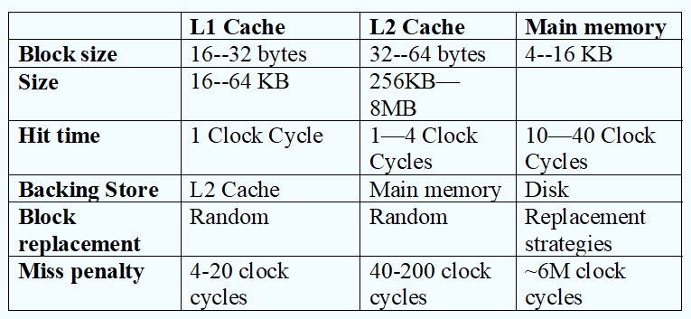
L1中代码和数据分开存，L2中代码与数据混合存储
程序运行的生命周期
- 编译：使用编译器将用高级语言编写的源程序转化成机器可以识别的机器语言(通常是二进制文件)
- 链接：将编译之后的离散的文件以及库函数进行链接，形成一个完整的可执行文件
- 装入：将可执行文件装入到内存中运行
不同步骤中的地址
- Symbolic Address(符号地址)：源程序中的地址通常是符号的
- Relocatable Addresses(可重定位地址)：编译器将这些符号地址绑定到可重定位地址(例如“从本模块开始的14个字节”)
- Absolute Addresses(绝对地址)：链接器或加载器将可重定位地址绑定到绝对地址(物理地址)
地址绑定和映射
- Compile time(编译时刻)：如果事先知道内存位置，则可以生成绝对代码。如果起始位置改变，必须重新编译代码
- Load time(装入时刻)：如果在编译时不知道内存位置，必须生成可重定位的代码
- Execution time(执行时刻)：如果进程在执行期间可以从一个内存段移动到另一个内存段，则绑定延迟到运行时(需要硬件支持地址映射)
如果在装入时刻就地址绑定，那么运行时内存中的程序的位置就不能移动了。一般在实际运行中使用执行时刻的地址绑定，需要实现地址绑定与映射的快速计算(硬件实现)
Base and Limit Registers(基址/限长寄存器)
基址寄存器决定起始位置，限长寄存器决定最大长度(最大逻辑地址)，用户程序如果访问到了内存中超出最大逻辑地址的部分，直接清除程序
逻辑地址与物理地址
- 逻辑地址：CPU看到的地址，也称为虚拟地址
- 物理地址：内存看到的地址
如果在编译和载入时进行地址绑定(compile-time and load-time address-binding，运行前地址绑定)，那么逻辑地址和物理地址是一样的，也就是此时虚拟地址直接对应物理地址；如果在运行时进行地址绑定，那么逻辑地址和物理地址是不一样的，也就是说此时虚拟地址与物理地址之间需要进行映射。
内存管理单元MMU
可以进行地址运算，是用于将虚拟地址映射到物理地址的硬件设备。用户程序在运行时看到的是逻辑地址，不会看到物理地址。
为什么不通过软件实现？
地址转化的使用频率非常高，硬件实现更加快速，可以认为运行时间忽略不计。
动态载入
运行时动态的将需要的程序载入内存中，程序在没有被调用之前不会被载入。
优点：
- 可以节省内存使用量
- 不加载未使用的例程
- 当需要大量代码来处理不经常发生的情况时非常有用
- 不需要通过程序设计实现操作系统的特殊支持
- 减小可执行文件的大小
动态载入的一个重要的作用是共享库的使用是需要载入一次，而不是每个进程每个程序都载入一次
小结
- 编译
- 从高级语言到目标模块的过程(实际是预处理、编译、汇编三个阶段的统称)
- 本质是一些机器可以“看懂”的0/1指令和数据文件
- 链接
- 把编译后的目标模块与所需库函数链接在一起形成一个整体
- 静态链接、装入时动态链接、运行时动态链接
- 装入
- 将虚拟地址映射为内存实际的物理地址
- 绝对装入、静态重定位(可重定位装入)、动态重定位(动态运行时装入)
连续内存分配
将一段完整连续的进程分配给一个进程，使得进程可以完整实现
内存通常分为两个分区
- 常驻操作系统，通常用中断向量保存在低内存中
- 然后将用户进程保存在高内存中
重定位寄存器(包含最小物理地址的值)用于保护用户进程之间的相互影响，以及防止操作系统代码和数据的变化
- 重定位寄存器用于保护用户进程之间的相互影响，以及防止操作系统代码和数据的变化
- 重定位寄存器包含最小物理地址的值
- 限制寄存器包含逻辑地址的范围-每个逻辑地址必须小于限制寄存器
- MMU动态映射逻辑地址
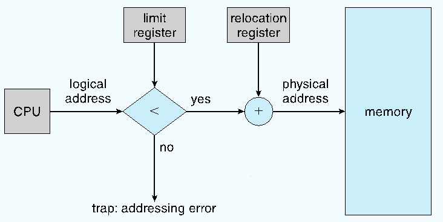
连续内存分配的类别
- Single Continuous Allocation(单一连续分配)
- 内存分为系统区和用户区，用户区每次只调入一道程序运行
- 一次只放一道程序，无并发
- Multiple-partition allocation(多分区分配)
- 将内存划分成若干个连续区域，称为分区。每个分区只能存放一个进程。包含
- Fixed Partitioning(固定分区)
- Dynamic Partitions(动态分区)或 Variable Partitiom(可变分区)
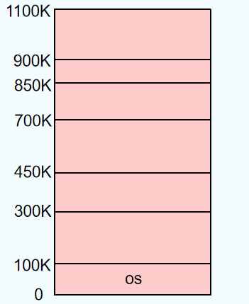
- 将内存划分成若干个连续区域，称为分区。每个分区只能存放一个进程。包含
固定分区各个部分的大小是不可变的，一旦划分就不可更改，可能会造成内存空间的浪费
动态部分
- Hole - 可用的内存块空间，不同大小的 hole 分布在整个内存中
- 当一个进程到达时，从一个足够大的 hole 中为它分配内存
- 操作系统需要保存如下信息
- 已经分配的部分
- 空闲部分
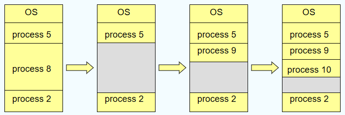
动态分配算法
- First-fit：每次都从第一个 hole 开始寻找，找到第一个大小满足要求的
- Next-fit：从上次结束的那个 hole 开始寻找，找到第一个大小满足要求的
- Best-fit：能满足当前要求的 hole 中最小的那个(会产生比较小的碎片)
- Worst-fit：能满足当前要求的 hole 中最大的那个(会产生比较大的碎片)
First-fit and best-fit better than worst-fit in terms of speed and storage utilization
基于索引的算法
- 快速适应算法：也称分类搜索算法，将空闲分区按容量大小进行分类，设置素引表项，每一个空闲分区类型对应一项，挂成链(把原来一根变成多根)
- 根据进程长度，从素引表项中找到能容纳他的最小空闲区链表；从链表中取下第一块进行分配。
- 伙伴系统：每个空闲分区大小必须是2的n次幂字节；对进程占用空间n计算一个i值使得\(2^i>n\)，从剩余空闲分区找最适合的;若无则将分区逐层拆分;释放时则逐层合并
- 初始内存空间为1024K，有一个进程请求150K空间。
- 哈希算法：根据空闲分区链表的分布规律，建立哈希函数，构建一张以空闲分区大小为关键字的哈希表，根据所需空间大小通过计算得到哈希表的位置。
Fragmentation(碎片，零头)
- 外部碎片：总的内存空间中没有使用的部分，是不连续的
- 内部碎片：一个分区内部没有被使用的内存部分
- 通过压缩(compaction)/碎片整理(defragmentation)来减少外部碎片
- 打乱内存内容，将所有空闲内存放在一个大块中
- 压缩只有当动态重定位时有效，并且在执行时完成，编译以及载入时的地址绑定无法进行压缩。
- I/O问题
- I/O操作时也不运行进行压缩，因为I/O操作时数据读写，压缩操作也是数据读写操作，如果同时进行可能会导致数据不一致性
分页
分页的方式可以有效的解决碎片问题，内存分配是不连续的。
基本思想
将逻辑地址空间与物理地址空间都划分成小块，逻辑地址划分的结果是页，物理地址划分的结果是帧。要运行一个大小为n页的程序，需要找到n个空闲帧并加载程序。
逻辑地址结构
- Page number(p) - 页号，用作页表的索引，页表包含物理内存中每个页的基址
- Page offset(d) - 页内偏移
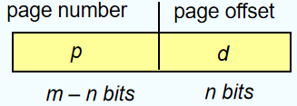
对于这一张图，逻辑地址为 \(2^m\)，页的大小为 \(2^n\)
映射过程
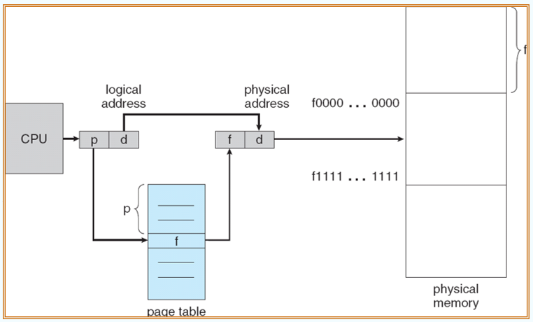
获取逻辑地址之后，取出页号，在 page table 中根据逻辑页号找到对应的物理页号，然后再根据页偏移找到对应的物理地址，从而对应到物理内存空间中的实际部分
问题
页面大小为4KB，虚地址2362H、1565H的物理地址分别是多少？
| 页号 | 页框号 |
|---|---|
| 0 | 101H |
| 1 | 102H |
| 2 | 254H |
答案与解析
页面的大小为4KB，也就是13个bit，此时需要的偏移量为12位，也就是3个字节，所以虚地址的后3个字节表示的是物理地址的偏移，那么第一位标识的就是虚拟页号，需要与物理页号进行对应，2对应的是254H，1对应的是102H，所以这两个虚地址的物理地址分别是254362H与102565H.
空闲帧的分配
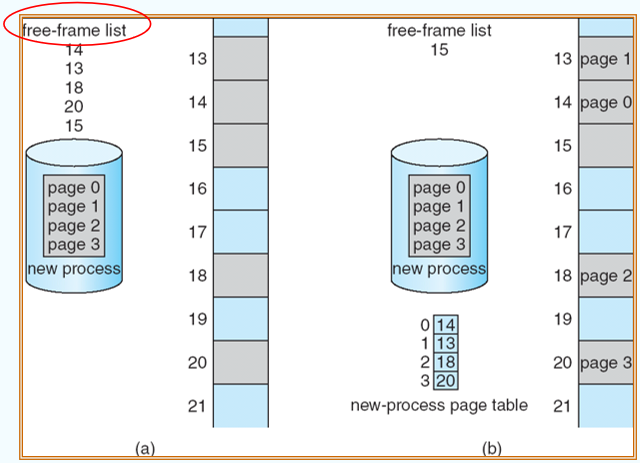
Page Table的硬件实现
两个寄存器，page-table base register(PTBR)和page-table length register(PTLR)，分别存储页表的起始地址以及页表长度。
page table存在于内存中，所以进行一次地址访问需要访问两次内存
如何解决此时内存访问次数变多，消耗的时间变长的问题？
使用快表translation look-aside buffers(TLBs)解决问题，使用sddress-space identifiers(ASID)来区分快表是由那个进程提供的。
ASID如何判断快表到底属于哪一个进程
- TLB 条目存储：
- 当一个进程进行内存访问时，CPU 会将虚拟地址和对应的物理地址存储在 TLB 中，同时附上该进程的 ASID。
- TLB 查找：
- 当 CPU 再次访问同一个虚拟地址时，它会首先检查 TLB。TLB 不仅会匹配虚拟地址，还会检查 ASID 是否匹配。
- 如果 ASID 匹配，说明这个 TLB 条目属于当前进程，CPU 可以直接使用 TLB 中的物理地址。
- 如果 ASID 不匹配，说明这个 TLB 条目属于另一个进程，CPU 会忽略这个条目，并重新进行地址转换。
- TLB 刷新：
- 当进程切换时，操作系统通常会刷新 TLB，以确保新进程的 TLB 条目不会与旧进程的条目混淆。刷新 TLB 可以通过清除所有条目或使用 ASID 来标记哪些条目需要保留。
使用快表的时候，如果可以从快表中获得对应的物理页号，就直接取出。如果不能从快表中获得对应的物理页号，就在页表中获得物理页号之后将对应关系添加到快表中。
加了快表之后的硬件实现方式
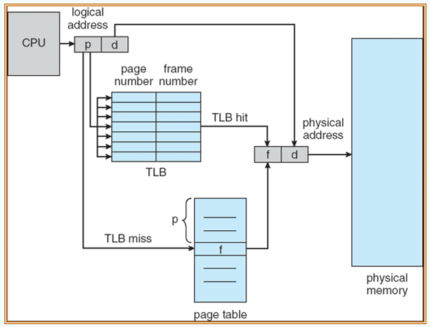
分页中的内存保护
添加 valid 位标记，如果这一位为1，那么这一位就是有效的，否则这一页就是无效的。
valid标记用来进行内存保护，可能有些页表虽然已经被分配给了某个进程，但是具体的页中的内容还没有进入内存，就标记为invalid
共享页
一些仅读的代码或者数据内容可以在多个进程之间共享，这些共享的内容需要在不同进程的同一处逻辑地址上，从而对应到相同的物理地址上。除了这些共享的内容之外，每一个进程还有自己的局部变量等其他私有数据变量，这些数据由不同的进程自己维护，逻辑地址没有额外要求。
页表结构
- 层级页表
- 将逻辑页表再次拆分成多级页表的结构
- 典型例子：二级页表
- 使用 1K 作为页大小的 32bit 机器将逻辑地址首先划分成两份
- 22bit 表示页号
- 10bit 表示页内偏移
- 此时可以对这个 22bit 进行再次划分
- 12bit 表示页号
- 10bit 表示页内偏移
- 于是就有了这样的页表结构
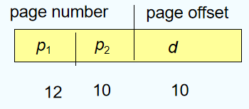
图中 p1 表示在外层页表中的页号，p2 表示在外层页表中的这一个页中的偏移 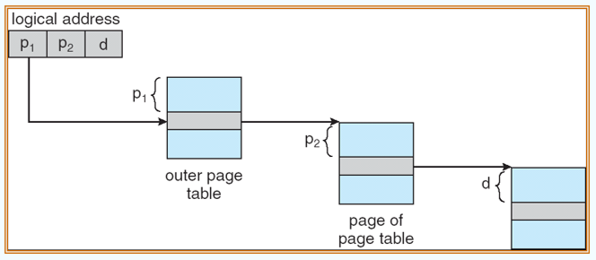 - 使用多级页表的好处：可以节省内存
- 使用 1K 作为页大小的 32bit 机器将逻辑地址首先划分成两份
- 哈希页表
- 虚拟地址被哈希到一个页表中，页表中存储中哈希到同一个位置的元素的链表(每一个元素都包含了虚拟页号、物理页号以及指向下一个元素的指针)
- 在链表中通过匹配虚拟页号来进行匹配，如果匹配成功，就取出对应的物理页号
- 典型例子是64bit地址的聚集页表(clustered page table)
- 每一条链表都指向多个页面而不仅仅只是一个
- 对于内存引用分散且不连续的稀疏地址空间非常有用
- 反向页表(在整个系统中只有一个页表)
- 包含存储在实际内存中的页的虚拟地址以及拥有这个页的进程的信息
- 减少存储页表所需的内存空间，但是增加了搜索时的耗时
- 使用哈希来降低搜索的范围
交换
- 当内存不足但需要进行进程调度时，需要进行换入/换出方法。
- backing store：一个快速盘大到足够存储所有用户的所有内存镜像，这时换入换出直接进行部分内存镜像的交换。它必须提供直接的内存镜像的访问。
- Windows中使用交换文件
pagefile.sys - Linux中使用交换区
- Windows中使用交换文件
- 使用换入换出的逻辑（roll out, roll in）：根据优先权调度算法进行排序，低优先度的进程被换出，高优先级的进程被换入。
- 交换的主要开销在于交换时间；交换时间的大小直接取决于交换内容的大小。
- 同时，系统需要维护一个ready queue作为等待换入的进程队列(即在disk中有内存镜像的进程)
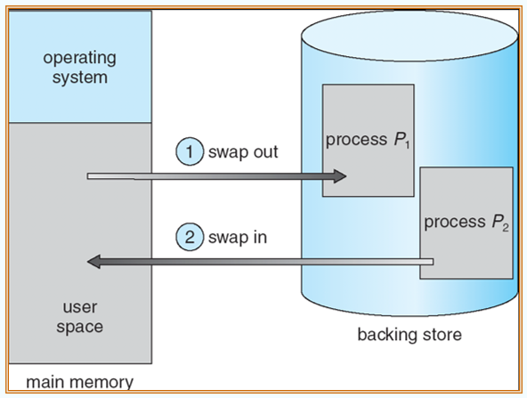
分段
- 基于用户管理的内存管理方案
- 将用户进程的逻辑地址空间划分为大小不等的段(段内要求连续，段间不要求连续)
- 进程的地址空间是二维的，需要包含段号以及段内偏移量
段表结构
段表包含着二位的物理地址映射，每一个段表项都包含
- base(基地址) - 这个段在物理地址上的起始位置
- limit(段长) - 这个段的长度
两个寄存器
- Segment-table base register(STBR)指向段表在内存中的起始位置
- Segment-table length register(STLR)表示段表长度
- 只有当段号小于 STLR 的时候才是有效的
保护机制
同样使用有效位以及读写执行的标记来表示页面的有效情况
硬件实现
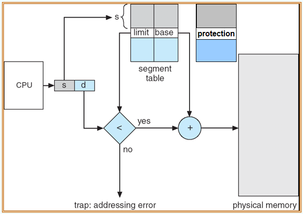
首先判断段号(s)是否有效，然后判断页内偏移的大小是否有效，最后根据物理页的基地址以及偏移量来计算出实际的物理地址
举例：The Intel Pentium
- 支持同时使用段以及段页进行内存管理
- CPU获取逻辑地址
- 逻辑地址被划分成局部部分以及全局部分
- 页部分使用的是线性地址
流程
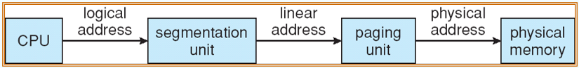
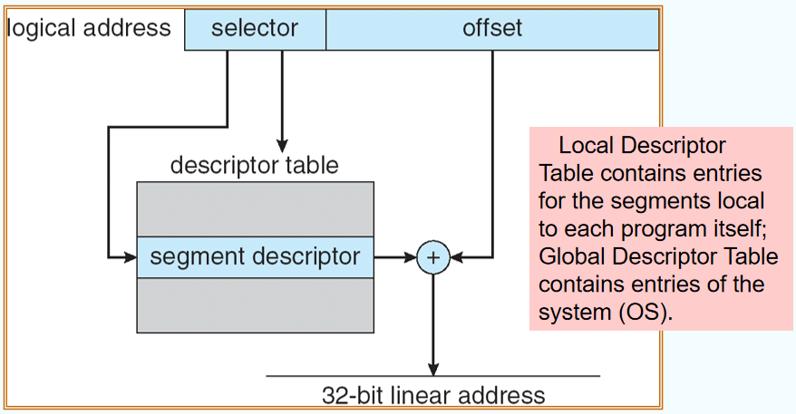
首先是使用段表结构找到页表的位置(32-bit linear address)，接着再使用页表结构找到实际的物理地址。